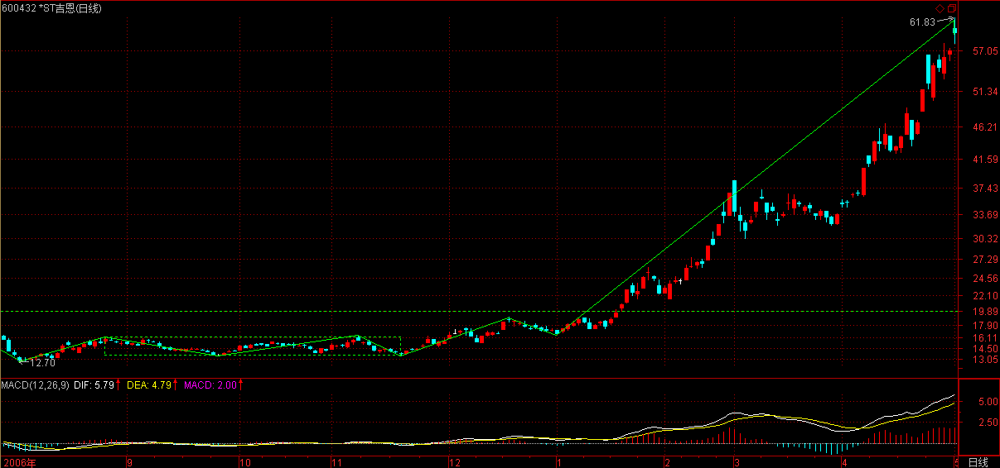
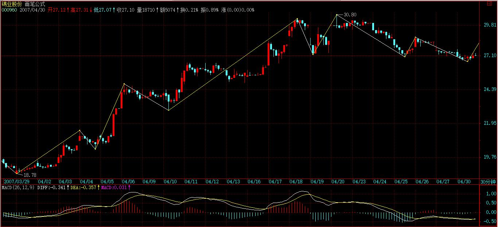
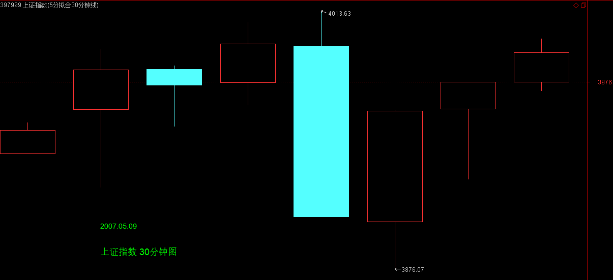
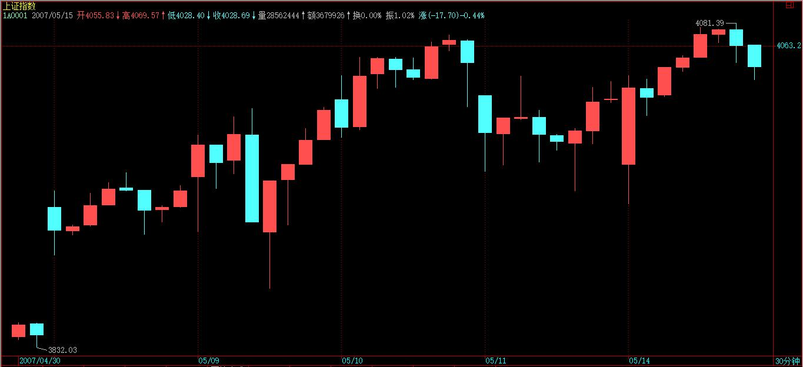
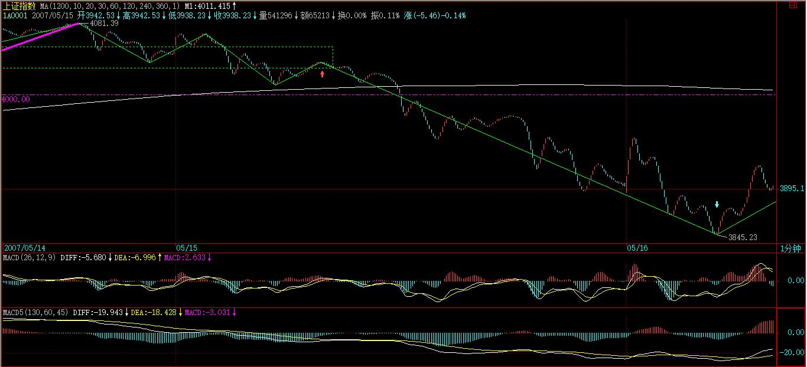

(2007-05-09 08:30:16)
国人，赌博心理特重，一个六合彩就可以横扫大半中国，那些偏僻的山村都可以为之痴狂，而这里包含的某种特点，正是任何群体性运动的基础。【韶山映山红】偷心不死，群体性运动的基础。】
【韶山映山红】森林里DE小白兔 商榷：根据缠师上下文的意思，我以为“群体性癫狂”是群体性运动的基础。如下文：而这里包含的某种特点，正是任何群体性运动的基础。股票市场中，那些短线股评荐股者，如传销般，也就利用这种群体性癫狂来达到目的。】
股票市场中，那些短线股评荐股者，如传销般，也就利用这种群体性癫狂来达到目的。【韶山映山红】短线股评荐股者。为什么只是短线？暴利，暴富，偷心不死的内在心理诉求。】
有一种最弱智的，就是为所谓的庄家出货卖嘴的，这种长久不了，一两次后就没戏，只能改换门庭，由于没有可持续性，所以不值得专门研究，【韶山映山红】容易被发现。】而且靠找人卖嘴才能出货的庄家，智力水平太低，没资格让本ID去谈论。【韶山映山红】没有技术含量。】
【韶山映山红】若禅精舍（陈秋明）：
曾经有人找我去搞个类似的事情，找股票，然后推荐，然后收费之类的，我说如果我有那心情和精力愿意每天去复盘，那我干嘛自己不操作？非要通过推荐给别人来赚钱？这在逻辑上是相悖的事情，其实稍微想一下就知道了。
推荐股票收费，是最没有技术含量的事情。不过市场上存在这样一种人，本身已经通过股市衣食不愁了，但对每天枯燥单调的盘面生活很是厌倦，所以基本不会花大量时间在股票上，这类人的技术和操盘能力是有的，甚至还比较高，但并不愿意花时间花精力在从股市赚钱这种事情上。这样的人，如果推荐股票，一般都比较靠谱，但本身就不愿意在这方面做苦力的人，一旦真的去做这个苦力活，却要通过把劳动成果给别人来收费，而不是自己享用，那是脑子有问题。
这个意思就是，做一件事情，如果有风险低而收益高的选择，任何人都不会向相反的方向选择，复盘选股就是这样。但这和一些培训收费的不同，可能存在一些人，不想每天十二个小时花在股市上，而是喜欢做一两个小时做一些教学工作，这是可以接受的，就好像很多专门从事研究的人一样，他的兴趣在研究其中的逻辑，而不是通过这逻辑来赚钱。
这大概对很多人都是无法理喻的事情，认为不可能，毕竟金钱在大多数人看来，尤其是没有多少钱而对金钱极其渴望的人看来，是最重要不过的事情。人习惯以自我的认知，来参照理解身外的事物，但这样的理解往往都是错误的，人类是一个非常复杂的群体，而不是只分为有钱和没钱两种，而对于所有值得追求的东西，其实钱是最廉价的。
】
现在说的是这样一种具有可操作性的把戏，不妨假设有一痴呆儿，在一每天浏览量超过10万的网站或电视上随机地推荐短线的股票，有5%的人相信并尝试第二天开始半小时内买入，也就是有5000人，每人平均的买入量是2000股，也就是有1000万的买入量，这个买入量，对于绝大多数的股票来说，足以使得该股票具有了极大的支持而呈现大涨。【韶山映山红】开盘半小时10万手的量，确实惊人，涨停也不稀奇啊。谎言被动的自我实现。完成了启动。】
而对于另外的95%，有些因为高了而拒绝买入，但至少有一个印象会留下，这股票推荐得真准，在下次荐股游戏中，这就是新的资源。【韶山映山红】没参与的关注者是潜在的资源。】
而有一部分胆子大的，会在更高的价位买入，这样，一个资金的流动输入就产生了，【韶山映山红】资金流的延续。】而买入挣钱的，都爱到处忽悠，所以，相应人群就会不断增加，【韶山映山红】资金流的扩散。】直到资金流入与筹码的松动达到平衡。【韶山映山红】资金流入与筹码的松动达到平衡，也就是供求平衡，还是中枢移动的持续过程。】
这样一个系统，可改进成组织更严密的传销：先建核心的第一级会员，会员，当然都要交会费，得到的回报是可以先买到第一批的货，在广泛向外推荐前，可以优先得到购买权。【韶山映山红】炮灰，还是花钱当炮灰。】
而更精细的系统，可以把会员分为不同的等级，这样，可以让购买流量得到一个更好的控制，一个逐步扩散的传销效果。【韶山映山红】炮灰的管控。】
这种有精细结构的传销系统，可以支持一个较长时间的操作，大致就演化成一个庄家行为，只是这庄家是很多不同等级的人构成的一个有联系的组织，这比一般的庄家有一个好处，就是不存在一个人挂一大堆虚帐号的监管风险，坏处之一，就是这样一个结构，其稳定性是有问题的，一有困难，很容易树倒猢狲散。【韶山映山红】类庄家。不容易被监管察觉。稳定性差。】
对于特别短线，经常换股的传销系统，由于最终必然最大量的人被套，这样来回几次后，就会使得外围的传销者资源逐步枯竭，最终整个系统崩溃，所以，那些经常在电视、网站上，每天N股的人，一般来说其流传寿命都不会长，一轮大的调整，就可以消灭一大批。
当然，每轮行情起来，都可以看到类似的人出现，然后消失，如此而已。【韶山映山红】自同构。】
而比较长线，有着精细结构的传销系统，就会逐步演化成所谓的私募基金，这是比上述传销系统更稳定、更能长久的结构，这就是市场里这类无聊把戏的生命演化进程。【韶山映山红】私募基金的外围是什么？★以后研究。】
【韶山映山红】若禅精舍（陈秋明）：
市场中的生态是多样化的，和人类一样，是一个足够复杂的群体。在基金领域，各种玩法也是花样百出，更不用说那些非阳光基金的组织了。相比而言，其实一些非阳光的组织还可能有些真材实料，但这概率也是很小的。对基金来说，靠技术赚钱是微乎其微的存在，但不同的生态链，各自都有自身的生存方式，而这些不同的生存方式，均会对市场的走势产生影响，这属于技术之后所应该了解的事情。例如公募资金的相关规定，其实就是每次大跌后出现大规模盘整的原因之一，这些知识的掌握，会让你对市场的理解更进一层，当然这还是锦上添花的事情，前提是必须有锦，否则再多的花也是白搭。
】
而市场中绝大多数的，都不过是在参加一种无意识的传销游戏，为最终的炮灰提供足够的人肉人骨。【韶山映山红】都免不了成为大资金的外围。】
而在基金等层面上，那是另一种游戏，【韶山映山红】大资金是互斗。】但其天生的弱点，有着许多可攻击的地方。因此，基金会逐步演化成对冲基金或更稳定的合伙制结构，这里的赎回或对风险的忍受程度有着更大回旋余地，因此有着更高层次的市场生命。【韶山映山红】赎回带来资金风险。对风险的忍受程度影响操作级别。】
【韶山映山红】若禅精舍（陈秋明）：
“市场中的绝大多数，都不过是在参加一种无意识的传销游戏”。这种游戏的本质，其实就是情绪的相继传染，而在市场中的长期生存，是必然要和这些情绪的感染做斗争，并且看清这种情绪是如何传染，同时在向相反方向传染的苗头出来时退出。
】
市场如同大海，这里有各种的生命形态，本ID之所以说这些，是要让各位对市场中各类资金的生存状态有一定的认识，这些生存方式，都会存在，不会出现某种形式一统天下的状态。【韶山映山红】各类资金有各种的生命形态、生存状态、生存方式。】
有人可能要问本ID属于哪种形态，本ID哪种形态都不是，如果一定要说，那本ID属于猎鲸者的那种，你必须对所有猎杀对象有着最清楚的认识，才能对此找到最好的攻击点，然后杀之，而本ID只对大海里最大的生物感兴趣，本ID只猎鲸，特别对鲸群有兴趣，一次只杀一鲸的游戏，早玩腻了。【韶山映山红】鲸鱼分须鲸和齿鲸。一般齿鲸以鲨鱼、乌贼、海兽、大鱼等为食物，而须鲸没有牙齿，就只能吞吃小鱼小虾之类的。 猎鲸者的胃口就更大了。】
【韶山映山红】若禅精舍（陈秋明）：
人所做的所有事情，其本质都应该是玩。也就是通过做这件事情的过程，来获得成就感，这基本上是所有人都避不开的，即使是遁世埋名，很多也是在追求入世显名之外的满足感。人的成就感的来源，可以产生在任何事情上，例如痛苦本身就是一种可以产生满足感的事情，有人就愿意去享受那种悲剧式的凄美，甚至这样的人在社会中并不少见。
对一个眼中只有钱的人来说，除了钱以外的事情都没有追求意义，这样的人不过是钱的奴隶而已，并且通常都是没多少钱，而且只要抱着这样的思维方式，基本也不会挣到什么钱。看似不合逻辑的背后，是金钱能量本质所导致的必然：眼中只有钱，所有事情围绕钱来操作，最终的结果就是赚不到钱。这大概是个很讽刺的事情，但却是现实。
一个人的金钱能量，与其哲学能量密切相关，当然这又是一个没钱的人所无法理解的话题。一个人的哲学能量将直接反应到金钱能量上面来，并且和历史的对称美一样，金钱也符合对称美，一般来说钱怎么来怎么去，通过坑蒙拐骗而来的金钱，最终都是被坑蒙拐骗而去的多，只是一场虚幻的过场而已。对于投机来说，基本上出名的那些人最后的结局都不太好，涌金系和德隆系那种搞法，只能说玩的越大摔的越惨，缠师算是在圈外非著名的，至少始终与本人并没有对应上来，最后也是睹者生凄。
我个人一直认为，金钱的能量，来源于个人所能为社会创造价值的能量，属于做正确的事情，做对别人有益的事情，这种价值创造的附属奖励。原文第17节后面的回复里，缠师说：“先把股票这无头债了了吧”，那个时候，应该他自己已经知道身体情况了，后面说到癌症的时候也说其实自己早就知道。说明在当时的缠师认知里，以前从股市里赚的钱，是一种负债，而之所以有这博客和缠论，也是为此。但缠师的过人之处，并不在于股票如何，以及公开了如何，而是明明想送一座宝山出去，也明知道这宝山之大让人狐疑不信，于是就给了股票这个容易被相信的金砖，这块金砖只要能拿起来，自然就会看到那座宝山，也无所谓信与不信了。其实只要是人，只要那扇窗户开了，看到了那山那海的风景，没有割舍的下的，这属于一种引人入道的善巧，就好像缠论前面各种男女体位等吊人眼球的玩意，后面看的人多了自然也就没有了一样。
】
有人又要问本ID不也推荐过股票吗？那只是本ID希望各位能专心学习，除了那十四只，还有一些最大盘的但告诉各位只是用来打架散户没必要介入的，
【韶山映山红】600050中国联通。】
【韶山映山红】601398工商银行。】
【韶山映山红】601988中国银行。】
【韶山映山红】601318中国平安。】
最后明确说过的，就是VC股600635（5元多说的）
【韶山映山红】600635大众公用。】
和北京旅游股000802（10元多说的），
【韶山映山红】000802北京旅游，2014.10.24变更为北京文化。】

3月19日加息后1个多月到现在，从来不说具体股票了。为什么？因为这里的人越来越多，本ID再说具体股票，就成了传销或被人利用成传销了，本ID又不需要任何人来抬轿子，注意，本ID是猎鲸的，而不是那鲸鱼。
当然，本ID说过的，都会负责到底，因为本ID自己依然在猎鲸中。
但绝对不是说让各位现在才去追高买，其实，对本ID猎鲸中的或不是猎鲸中的，方法是一样的，本ID是要把渔的方法告诉各位让各位自己去找鱼吃，关键是有什么级别的买卖点而不是对象。
至于刚好发现本ID也在猎着的有买点，那当然也可以介入，但不是让各位集体无意识地都聚集在本ID的猎鲸对象上，这不又成了变相的基金了？
猎鲸船本来就比鲸鱼大，把本ID变成鲸鱼那不太小看本ID了？
【韶山映山红】若禅精舍（陈秋明）：
市场中除了散户还有庄家，除了庄家还有各种阶层，除了各种阶层还有专门猎杀庄家的，这里讲的都是市场层次的多样化。所谓的跟庄无非也是找个大树来乘凉，殊不知这个市场上还有职业砍树的伐木集团。当然跟庄也可以成就一番天地，和其他股票技术理论一样，玩到最后其实殊途同归。在股票技术理论里，除了那些神奇数字、易经推算之类，凡是与形态、筹码、成本、指标、力度等相关的理论，其实都是在试图揭示市场合力方向问题，精确点说就是前文中的“市场大级别的合力方向与当下小级别合力方向二者之间的能量关系”。这些理论都是可以成就大道的，只是缠论更加数学化和精确化，最终的目的和实践者最终的高度，其实差不了多少，这其实和实践的人本身有关，与理论的关系反而不大。
】
本ID做事情从来都不想含糊，加上600635、000802，总共16只，依然是本ID猎鲸船所追杀的物体，【韶山映山红】大众公用当时才12.4亿，北京旅游当时才1.3亿。】当然，实际上，这猎鲸船追杀的目标还不只这16只，具体的结构，当然不能说了，这里汉奸这么多，记得2000多点那美国老头胡诌本ID说要把他打到满地找牙夹死他时说过什么吗？
把这16只分类一下，最早一批是去年12月底，最后一只是3月中旬，现在是5月初，按说过以后的涨幅大致分类一下，这不是为了炫耀，而是让后面来的知道本ID猎杀的介入位置，从中也可以发现一些技巧性的问题。【韶山映山红】技巧性的问题。可以做个专题。以后研究。★★★】
本ID介入的位置和说的位置大致一样，先来的当时买的，基本和本ID的成本是一样的，因为本ID的货多，当然成本不可能比各位低。但是，现在可就不一样了，因为本ID的成本不断在下降，这种最厉害的方法，本ID在课程里可是毫无保留地说过的，就不知道有多少人能办到了。
基本200%及以上：
000416、【韶山映山红】000416健特生物，生产脑白金。2008-01-06变更为华馨实业，2008-12-30变更为民生投资，2014-04-14变更为民生控股。】
000777、【韶山映山红】000777中核科技。】
000999、【韶山映山红】000999三九医药，2010.02.24变更为华润三九。】
600432、【韶山映山红】600432吉恩镍业，*ST吉恩。】

600635、【韶山映山红】600635大众公用。】
600578、【韶山映山红】600578京能热电，2013-10-10变更为京能电力。】

000099 【韶山映山红】000099中信海直。】
150%以上：
000778、【韶山映山红】000778新兴铸管。】
600777、【韶山映山红】600777新潮实业。2016-07-06变更为新潮能源。】
000915 【韶山映山红】000915山大华特。】
100%以上：
000600、【韶山映山红】000600建投能源。】
600649 【韶山映山红】600649原水股份，2008-05-12变更为城投控股。】
50%以上：
000802、【韶山映山红】000802北京旅游，2014.10.24变更为北京文化。】
600343、【韶山映山红】600343航天动力。】
000938、【韶山映山红】000938紫光股份。】
000998 【韶山映山红】000998隆平高科。】
【韶山映山红】若禅精舍（陈秋明）：
】
股票不过是小道，但条条小道通大道，本ID在这里费口舌，有一个目的，是希望这里至少能有人通过学习以及自我磨练，最终能成为猎鲸者。
其次，更重要的，要小道而大道，这才不枉来这里一趟。
至于想把这个变成传销场所或来这里希望找点传销玩意的，那就入错门了，本ID这里不需要这么多人，至于那些希望小道而大道或至少有志于成为猎鲸者的，如果觉得有更好的地方，也没必要留在本ID这里。
本ID只对面首感兴趣，而且只在419时候对面首感兴趣，对徒子徒孙，从来没兴趣。各位自便吧，本ID这里门前草深三尺也无妨。
附录：
【韶山映山红】2007-5-9 15:25】
各位今天爽吗？这样的震荡简直是一个最好玩的游戏，这一点，昨天已经给予最大的提示了。
今天没把缺口完全补上，这问题不太大，主要是今天看着缺口来的人太多了，个个争着提前量。【韶山映山红】逢缺必补带来的抢筹。】
至于技术不好的，昨天也说了，看5日线，不破就上上下下享受一下，也不错。
当然，4000点的突破不可能一下就确认完成，这里的震荡依然少不了，技术点说，就是要在这里形成一个有效的有点级别的中枢，然后出现该中枢的第三买点，才能确认突破的有效性。这个过程在理论上当然有失败往下形成第三卖点的可能，所以一切无须预测，看图操作是唯一正确的。【韶山映山红】什么是“突破的有效性”？★“就是要在这里形成一个有效的有点级别的中枢，然后出现该中枢的第三买点，才能确认突破的有效性。”什么是突破无效呢？“就是要在这里形成一个有效的有点级别的中枢，然后”“失败”“往下形成第三卖点”。】
个股没什么可说的，只是想很八卦地提一个问题，你说，那些在春节前后，号称5元都不让联通上的人，今天会想点什么问题？关于春节前联通在这里的现场直播，不会都忘了吧？
收盘把今天的解盘评论附录本帖后面，并回答问题。
下午3点30见，先下。
2007-5-9 08:32
各位今天爽吗？这样的震荡简直是一个最好玩的游戏，这一点，昨天已经给予最大的提示了。今天没把缺口完全补上，这问题不太大，主要是今天看着缺口来的人太多了，个个争着提前量。至于技术不好的，昨天也说了，看5日线，不破就上上下下享受一下，也不错。
当然，4000点的突破不可能一下就确认完成，这里的震荡依然少不了，技术点说，就是要在这里形成一个有效的有点级别的中枢，然后出现该中枢的第三买点，才能确认突破的有效性。这个过程在理论上当然有失败往下形成第三卖点的可能，所以一切无须预测，看图操作是唯一正确的。
个股没什么可说的，只是想很八卦地提一个问题，你说，那些在春节前后，号称5元都不上本ID的联通上的人，今天会想点什么问题？关于春节前联通在这里的现场直播，不会都忘了吧？
2007-5-9 15:25
匿名] 球球 2007-05-09 15:27:10
缠缠好！偶买了些科技股，你怎么看？
==
科技股，没问题，但真正的牛，要在第二阶段，当然，本阶段也会表现的，特别如果也是成分股的。但科技股不是现在市场的重心。【韶山映山红】科技股主要是成长股。】
2007-5-9 15:31
[匿名] 水房姑娘 2007-05-09 15:31:34
缠M,VC股今天为什么放那么大的量啊
【韶山映山红】600635大众公用】
==
其实这个问题本ID昨天已经很八卦地说过了，本ID的股票，在翻1、2、N等倍后，都会有洗盘，今天该股刚好翻两倍了，本ID出手洗一下也没什么不可以的吧。【韶山映山红】缠师说过，建仓不加仓，翻番的时候卖掉一半，把成本降到0，然后开始赚筹码。】
注意，无论谁的股票，一定要坚持买点买、卖点卖，除此之外，没什么值得关注的。
2007-5-9 15:35
[匿名] 鸢鸢 2007-05-09 15:29:54
姐姐好:)天天在电脑旁炒股会受到辐射的呀,姐姐怎么保护皮肤呢?呵呵,很八卦,还请姐姐别介
==
打坐。顺便预告一下，本ID明天开一个新系列，教各位打坐。
2007-5-9 15:38
[匿名] 恒灵 2007-05-09 15:37:43
报告缠主：我拿了联通将近一个月，昨天刚割肉跑了，谁知今天就涨停了，命真苦呀
==
要好好补习如何用MACD黄白第一次上0轴然后横在0轴上形成第二类买点的判断，这在课程里都有。
【韶山映山红】600050中国联通。】
2007-5-9 15:40
两只老虎 2007-05-09 15:40:04
神仙姐姐太可爱了。可惜我总是悟性太差，不能理解姐姐的暗意。今天几乎是上上下下的享受，没怎么动弹。不过总值竟然比昨天增加。跑了点999进了802，跑了点998进了938。尾盘看到999起来了，暗暗祈祷“神仙姐姐，轻点洗999吧！洗得俺心疼啊！”
==
其实本ID最近已经很八卦了，那天故意说999翻两倍了，其实就是提醒翻两倍要洗盘了，估计大多数人以为本ID要炫耀什么，这样理解，本ID也没办法。看来，本ID以后要换种操作的方法，这方法，用得太多，汉奸也熟悉了。
2007-5-9 15:43
[匿名] 缠途漫漫 2007-05-09 15:27:14
博主好
47课原文：“实际走势，在该第二波的分笔背驰（看1分钟图14:43的MACD柱子）后，大盘出现大幅度回拉，而且，反抽的最低位置也很清楚，就是这下跌最后一个反弹处，结果收盘也真的是在该位置，这其实也是理论所保证的。”
第二波的分笔背驰，1f图的MACD面积并没有缩小，难道是从MACD柱子开始缩短看出来的吗？
其后反抽的最低位置为何是“这下跌最后一个反弹处“？理论是如何保证的呢？这里和下跌背驰后反弹回到下跌的最后一个中枢的概念不象是一回事啊。
==
不一定要缩小，不大于就可以，而且深圳那边明显变小，对照一下就更能确定了。
1分钟以下级别的背驰，反抽到1分钟以下级别的中枢里，这当然被理论所保证。
2007-5-9 15:49
一粒米 2007-05-09 15:40:51
缠MM好!你的理论在强庄股中好象比较难把握，如今天的002042。
==
这股票和大盘没什么区别，怎么把握不了？
【韶山映山红】002042华孚色纺。】
2007-5-9 15:51
[匿名] 黑胶唱片 2007-05-09 15:42:02
缠老师:看到我的问题了吗?谢谢了!
==
对不起，我没看到，请再贴一次。【韶山映山红】002042华孚色纺。】提问者不知道一遍一遍的重复贴他的问题，反而问别人看到没有。缠师居然很乖巧的回复。脑补一下那个场景画面，不禁莞尔。在后面有这个提问者的续集。】
2007-5-9 15:52
匿名] 玫瑰心月 2007-05-09 15:46:12
缠主好!我是一个新股民,今年4月16日开户的,为了抄股,看了不少股票方面的书,感觉不是写的太理论就是前后矛盾,尤其是写到重要之处一笔带过，不知所云。看了缠主的方法之后,才有了一点感觉。在五.一前根据缠主说的选股方法,即突破年线的股选了几只,到现在增幅达10%以上,是真的，真的谢谢您了！
==
不用感谢本ID，一定要真学到真工夫，这才是你自己的。
2007-5-9 15:54
[匿名] 见习者 2007-05-09 15:53:43
老师说的联通我在3.00,4.55,5.64,5.80都买过,可是每回买完它都恒很长时间,相比同时期其它的股票,它涨得太慢,所以我每次挣一点就耐不住性子跑出来了,就像4月30号,我5.68买的,昨天5.78就卖了,严重后悔中,今天5.78犹豫中错过,想起老师说过的花心大萝卜,以后再也不干这种事了,请老师批评.
【韶山映山红】600050中国联通。】
==
想避免自己当花心大萝卜反而两头被甩，最好的方法就是学好中枢震荡的方法，你看，就算联通这大胖子，其震荡的幅度也是不小的，如果资金大点，震荡的利润并不少。【韶山映山红】打短差要考虑摩擦成本，尤其小散，操作的资金量不能太小。】
当然，一般的散户没必要参与这类股票，一般只在有比较大的第二、三类买点，才有买的必要，这类股票，一般都是动一动，躺N躺，胖子都这样。【韶山映山红】体量大的股票，震荡幅度一般偏小。】
2007-5-9 15:58
笨笨猪 2007-05-09 15:57:45
mm的系列和股票一样也是越来越多了，论语很久没说了，期待中
==
会说的。以后至少保证《论语》每周两次。这一周少了一天，就不算了。
2007-5-9 15:59
[匿名] 鸢鸢 2007-05-09 15:29:54
姐姐好:)天天在电脑旁炒股会受到辐射的呀,姐姐怎么保护皮肤呢?呵呵,很八卦,还请姐姐别介
缠中说禅 2007-5-9 15:38
打坐。顺便预告一下，本ID明天开一个新系列，教各位打坐。
[匿名] 无限 2007-5-9 15:52
下午好，缠老大
教打坐，老大不要教佛家的啊，求你了！
俺是学道的，有缘分的可以传授点。
多得不说了，反正入了门的都笑呵呵。
[匿名] 无限 2007-05-09 15:55:57
哦，不好意思，忘记说了一句，做个广告。俺师父的功法对50-60多岁的中老年男人，想身体健康，延年益寿的效果非常好。（俺学的是道家丹功）
==
偷心不死，没用的。就算你炼到白日飞升，也是自渎一场。
这问题，以后再说。
2007-5-9 16:03
[匿名] 黑胶唱片 2007-05-09 15:47:08
缠老师:是否我问的问题太过简单啊?怎么没回答啊!怎么没回答啊!
==
请把问题再贴一次，谁看到这位的问题，也可以贴过来，本ID找了一下，没发现。
2007-5-9 16:04
[匿名] 黑胶唱片 2007-05-08 09:35:28
缠老师早:想请教个问题,是否所有有次级别的背弛都是该股票的买点呢.例如:000960(锡业股份)的30分钟线,在4.30日的11点我认为已经是创了最低价了.不知道我所理解的对吗?谢谢老师了!
【韶山映山红】000960锡业股份。】

[匿名] 黑胶唱片 2007-05-08 09:44:12
另外的第二个问题:我用031002(钢钒GFC1)的15分钟线,在6.10买了.是否是老师所教的安全买点呢.
[匿名] 黑胶唱片 2007-05-09 16:00:38
希望老师能看到我的问题,谢谢了!
==
这些问题，在课程里都有，我要精确地回答你的问题，就要把某些课程重讲一次。你还是先把课程通读一遍，至少也应该先从中枢这一章开始，否则，你一开始概念就糊涂，以后就麻烦了。
还有，像安全买点这种概念，本ID无法回答你，因为任何买点都是有级别的，在这个级别安全的，在另一级别就不安全了。【韶山映山红】另外，买点之后还可能因为小转大而改变命运。所以，没有安全可言。要永远警醒。】
请先把课程通读一次。
2007-5-9 16:20
[匿名] 男人不坏 2007-05-09 16:05:41
请问禅主,论语中连续两节<子曰：唯！女子与小人为难、养也。近之则不孙，远之则怨。>和<子曰：唯上知与下愚不移。>里面的小人和下愚都是小人的意思,为什么不用同样的表达方式呢?
==
那为什么谁的菜不一定是真正的菜？
2007-5-9 16:25
[匿名] 天山飞狐 2007-05-09 16:18:08
[匿名] 天山飞狐 2007-05-09 16:05:36
[匿名] 天山飞狐 2007-05-09 15:53:16
请教缠姐:在一个a+A+b+B+c上涨走势中，b和c段用ＭＡＣＤ看符合背驰的条件，是否这就代表趋势背驰？其中的Ａ和Ｂ是否都要有三买才算完成？没有三买b和c段只能算盘整背驰？这问题困扰多时，急盼缠姐解答！！！！
==
这在课程里强调过的，B当然要出现第三类买点，否则B就没结束，都是围绕B的震荡，用盘整背驰就足以。
2007-5-9 16:28
[匿名] 大盘 2007-05-09 16:06:05
博主，对于每日走势分类的应用是不是可以简单先提示一下，对于向上的在中午收盘前后有单边向上的包含两个中枢的股票我现在每天都可以用公式自动找出来，如果把选出来的单边股票再结合中枢方法进一步刷选，是不是可以作为一个换股时候的参考方法，否则，一旦想换股票，逐个挑选，真是有点吃力。
==
对于超短线来说，最好的就是下午形成第三类买点的，也就是说，上午还是原中枢的延续，后面起来，下午一个第三买点确认，然后在14点后再拉起来。【韶山映山红】选那些T-1日形成中枢的，然后T日上午中枢延伸，下午开始拉升，回踩确认，然后再拉起来，T+1日就可以选择卖出。30分钟图不可能形成这样的结构，只有5分钟和1分钟图有可能。换句话说，适用于1分钟笔或者1分钟线段的操作级别。】
当然，还有很多类型，以后再说了。
2007-5-9 16:34
[匿名] 白玉兰 2007-05-09 16:21:14
妹妹好！今天用山东人换了点京能。前几天每次都是收盘前拉升。可是今天被套了，危险吗？
＋＋＋＋＋＋＋＋
[匿名] 白玉兰 2007-05-09 16:34:57
没有出差前，每天来妹妹这里，有一些感觉。没想到，出差回来后又不知所措了。还是离不开妹妹。
==
昨天都强调过，翻两倍的都要洗盘，你看，今天翻两倍的，全部如此，这显然不是偶然的。
而且昨天还特别强调不能随便换股，以免左右挨巴掌。
这些经验，不单独针对今天的。
至于那股票，中线问题当然不大，短线按中枢震荡处理直到第三类买卖点出现。
【韶山映山红】600578京能热电，2013-10-10变更为京能电力。】
2007-5-9 16:40
[匿名] joyce 2007-05-09 16:23:12
老师好，才刚开始接触股票的时候就有幸研读您的《教你炒股票》，目前正读到“男上位、女上位”的问题，想请问一下我这样理解对不对：600422出现了两次唇吻，然后一直保持“女上位”，好像您说的买点错过了，现在介入还行吗？
==
这些都不是最精确的，宝贝在后面，先把课程通读一次。
2007-5-9 16:42
[匿名] 后知后觉 2007-05-09 16:35:57
2007-05-09 16:28:02
复制7遍了。
老大好：好久没提问了，一直在学习。提个问题：老大对牛市喝牛奶的那些股，怎么看？比如600177。
【韶山映山红】600177雅戈尔。】
==
这些股票没问题，短线太急休整一下而已。
2007-5-9 16:45
[匿名] 白玉兰 2007-05-09 16:25:25
妹妹的环保山东人也是长线布局吗？
==
这些股票都是中长线的股票，没什么问题。
有时候看不清楚中长线走势的，就看看月线图。
【韶山映山红】000915山大华特。】
2007-5-9 16:47
[匿名] 戈石 2007-05-09 16:45:17
女王好！！！打坐？需要盘腿吗？很麻的。
==
血脉通了就不会有问题，但这些都是小事。
2007-5-9 16:48
[匿名] 天山飞狐 2007-05-09 15:53:16
请教缠姐:在一个a+A+b+B+c上涨走势中，b和c段用ＭＡＣＤ看符合背驰的条件，是否这就代表趋势背驰？其中的Ａ和Ｂ是否都要有三买才算完成？没有三买b和c段只能算盘整背驰？这问题困扰多时，急盼缠姐解答！！！！
==
缠中说禅 2007-05-09 16:05:36
这在课程里强调过的，B当然要出现第三类买点，否则B就没结束，都是围绕B的震荡，用盘整背驰就足以。
----------
[匿名] 我 2007-05-09 16:47:35
c里面要形成第3类买点必须要有两个次级别中枢，一个c1离开B，一个c2向B回拉，都不进中枢，背驰的话是不是一定要突破c1,c2高点才背驰？还有经常有时候不出现两个c1,c2就下来了
==
不可能出现这种情况，如果真出现，那就是第三类买点根本没出现，依然是中枢震荡。
另外，请把走势类型的完成等概念搞清楚。如果不创新高，那依然在C2里，C2都没完成，怎么知道他一定不跌回原来的中枢里？这里说的走势类型，都必须是完成的。
2007-5-9 16:52
匿名] 后知后觉 2007-05-09 16:35:57
2007-5-9 16:06
2007-5-9 16:09
2007-5-9 16:25
2007-5-9 16:28
2007-05-09 16:28:02
复制7遍了。
老大好：
好久没提问了，一直在学习。
提个问题：老大对牛市喝牛奶的那些股，怎么看？ 比如600177。
==
缠中说禅
这些股票没问题，短线太急休整一下而已。
-------
[匿名] 后知后觉 2007-05-09 16:50:03
谢谢啊，禅主，我都50岁的人了，跟你学习，没有功劳叶有苦劳。而且，我学的特别认真。这里字又小，我都复制了13遍了您才回答，以后禅主尽早回答我问题啊，我这么大岁数了，说到底您还是个小丫头，向您学习我不容易啊！还是谢谢你！
==
对不起，人多，很快就一页，很多问题根本看不过来，请原谅。
【韶山映山红】这里是缠师最后一次回复此人的问题，后面再也没有出现过了。
这人半个小时之内就一个问题没完没了的刷屏，还为老不尊、出言不逊，引来众多网友斥责：
“适可而止吧，这位。自作聪明，问得什么狗屁问题”2007-5-9 16:45
“50？我怎么觉得你象3岁小孩要糖似的”2007-5-9 16:54
“放下千百年来的身段是不容易啊 ，看在钱的份上。哈。。”2007-5-9 16:55
“来学习是自觉的,觉得辛苦别来啊. 态度要端正的”2007-5-9 17:02
“就是，学习是向人索取，还要讲功劳苦劳、年纪大小，把身段摆这么高，好像跟博主“小丫头”学很亏他身份一样。 提问题用词也奇怪，177喝牛奶是什么黑话？博主天天都有很多问题来不及回答，没人象这样觉得自己特委屈的”2007-5-9 17:55
“你确实不讨人喜欢,在这里不分性别和年龄.谁都会遇到这样的事, 都和你一样不就乱套夺了.下次注意.”2007-5-9 19:34
“偷心不死，没用的。就算你炼到白日飞升，也是自渎一场 ”2007-5-9 21:20
“后知后觉,超级鄙视你.什么玩意儿,为老不尊.提的问题一点技术含量也没有.”2007-5-9 22:18
石猴 ：“对这种人真不知道说什么 偷心不死 这么大的劲头不用在学习上，也不问学习问题，而且他问问题，别人就该回答，别人都欠他的，切 2007-12-25 17:34”
当年很多人有缘聆听缠师教诲，也要自己有个正确的心态才行啊。】
2007-5-9 16:54
[匿名] 见习者 2007-05-09 16:53:56
自接触股票以来,感觉自己的脾气越来越难已控制,赢利就手舞足蹈,觉得自己很英明,输了就愤怒无比,看谁都不顺眼,时间长了,渐渐明白股市涨跌属正常,关键把握好趋势,学习好技术,但是还是和以前心平气和.爱怜悯人的我不一样,希望老师的打坐功能帮我们消除浮燥的心态,更冷静的学习.犹其能在精神层次上有一个提高.
===
所以本ID要开讲打坐，当然，不单纯为了股票。
2007-5-9 16:56
看来，股票的煞气比较厉害，所以必须要开讲打坐了。【韶山映山红】煞气重的不是股票，是人心。】
本ID晚上又很不幸地被人抢占大搞腐败，推都推不掉，只好先下了。
再见，明早发帖。
2007-5-9 17:00
(2007-05-10 08:47:01)
股票煞气太重，新开一系列“教你打坐”。
正如说股票，当今世上，没有比本ID更究底穷源又有最切实、最高端的实际操作，打坐也一样。
打坐非禅非不禅，但现代人，流于形式、偷心难死，口头禅尚不得其法，打坐等切实工夫就更是茫然。再有这功那功的折腾，尽是睁眼皆盲、开口便错。如同股票，这法那人，瞎人眼者如麻似粟，打坐亦然。
股票，授人以财；打坐，授人以命，两者偏一不可。举世之中，能于此两者大开方便之门者，非本ID莫属，本ID也就受点累、费点力，趁着与各位缘分未尽，写将出来。
如今科学横行，像打坐这种活动，自然被列入装神弄鬼之列。但科学，从来都不是究底穷源的。
一个很简单的问题，例如，你看一朵花，之所以能看到花，或者有花之像，一个最基本的前提，就是你有能让花成像的仪器，并且有相应的仪器去感应让花成像的仪器所成之像。
科学其实是这样的玩意：由于每个人都有这样的仪器以及相应的感应仪器，科学首先要假定，存在一种普遍的，能被尽量多的人的仪器所认可的标准，这就是科学观察的基础前提。
对于最恶劣的科学形态来说，会假定这标准是适合所有人或参照系的，所有不符合这个标准的，都被科学所排除在外。例如，如果所有的人看一花是花，而你看那花是只猴子，那么，对于这最恶劣的科学形态来说，你就有病了，需要治疗去调教到把花看成花的状态，或者，更直接地，宣布，你不是人，然后把你废了完事。
科学，就是这样一种玩意。
再说一个科学的大秘密给各位听，科学的发展，不过是把这种最恶劣的科学形态的原则不断延伸下去的结果，注意，这和所谓的特例、科学范式的变更无关，那些只是标准之间的变换，但这最基本的原则是不变的。
反对基督教以及基督教所反对的科学，从本质上是最基督教的，是基督教宏大叙事的最大最流行版本。
注意，本ID并不反科学，本ID这里连419、淫乱都不反，为什么要反科学？难道科学或其教徒们觉得自己连419、淫乱都比不上，怕被本ID反？
本ID这里不废一法，不增一法，科学就是科学，把他如面首般扒光给各位看就是了。
各位千万别给科学神功给晃晕了，所谓科学的能力，例如能让人无论白天夜晚都可以打着飞机在天上飞，一个蛋蛋就可以废了N百万人，就如同基督教所宣扬的所谓神迹，某某功宣扬的所谓神通。
那些什么教什么功宣扬的神通、神迹，大概没人能看到，而科学能让他所承认的所有人，在任何情况下，都能看到他的神通、神迹，这就是所谓的可检验性。打个比方，这什么教什么功如同这样的面首，他们宣称自己能力惊人，但一上台就萎掉；而科学面首，宣称自己的能力是能够被所有人去检验的，一旦上台出现萎掉的情况，也就是被检验出和所谓客观不符合，就下去打点激素，重新上台，例如，爱因斯坦对牛顿就玩了这样一手。
无论眼见为实还是眼见为虚，甚至把眼见与虚实用一种最复杂的关系连接，其本质前提都是一样的，都需要眼，也就是让花成像的仪器为前提。
有人可能要说，那么把眼的结构或者视觉系统的工作原理也科学一把不就可以？但，当你把科学在眼或什么视觉系统上面首一把时，你同样逃脱不了前面所需要的前提，科学在该前提下画地为牢了。
科学闭嘴的地方，打坐开始。
打坐并不需要一定坐着，和面首419时就不能打坐，那这种打坐不过是骗人的把戏。连419都不能打坐，那把你扔到火里烧时，你更不能坐了，那这种打坐又有什么用？
无论你419还是被扔到火里，你又哪一刻离开过打坐？
你不打坐时，你在打坐着；你打坐时，在打坐着；你坚持打坐，你在打坐着；你骂打坐者是狗娘养的，你在打坐着。如果你认为盘起腿或脑后发点光才是打坐，那你还是在打坐着。你偷抢奸杀无恶不作，你也还是在打坐着。
有人可能要问，既然总在打坐中，那么还学什么打坐？
正因为你总在打坐中，才需要学打坐；如果你真有一刻，例如把你扔到火里烧时，就不在打坐中了，那你学那打坐又有什么意义？
那么，把你扔到火里烧时，谁在打坐？参！
（待续）
附录：
【韶山映山红】2007-5-10 15:36】
本ID昨天说，今天要继续震荡。但估计到14点45分前，所有人都以为本ID说错了，以为那些忽悠今天要冲多少多少点的股评对。结果怎么样，就不用本ID说了。
震荡，不一定是绿盘狂跌才是震荡，就像一个中枢，在下面震也是震，。上面震难道就不是震了？今天尾盘的下来，在技术上严格保证，小级别的背弛当然是原因，还有一条就是中枢的走势必完美原则，不明白的，要加倍学习。
关于4000上下的震荡形成的中枢，要突破，向上要有第三类买点，否则，依然存在向下变盘的机会。在第三类买点出现，中枢完结前，震荡继续。
用分时中枢概念看，昨天是一平衡市，

今天也是，

但今天中枢的位置向上移了，
明天就面临三种选择，强的继续上移，中的围绕今天中枢震荡，弱的回试昨天中枢，从而让一般概念意义上的中枢形成级别扩展。根据明天开盘的走势，这一点不难分辨。
这些都是很短线的活动，脑子不够使的，就看5日线就可以，本ID说过多次，要量力而为，用自己最精通最有能力控制的方法，花心萝卜不是人人能干的，要成为花心萝卜，要学很多工夫的。
新的文章15分钟后发新帖子，请各位到新帖子里看。
=================
大盘讲评在收盘后附录，由于本ID要去一趟深圳，所以下午会把上次提到的对大盘中期走势的技术分析文章发出，明天就不发帖子了。
先下，再见。
2007-5-10 08:50
本ID昨天说，今天要继续震荡。但估计到14点45分前，所有人都以为本ID说错了，以为那些忽悠今天要冲多少多少点的股评对。结果怎么样，就不用本ID说了。震荡，不一定是绿盘狂跌才是震荡，就像一个中枢，在下面震也是震，。上面震难道就不是震了？今天尾盘的下来，在技术上严格保证，小级别的背弛当然是原因，还有一条就是中枢的走势必完美原则，不明白的，要加倍学习。
关于4000上下的震荡形成的中枢，要突破，向上要有第三类买点，否则，依然存在向下变盘的机会。在第三类买点出现，中枢完结前，震荡继续。用分时中枢概念看，昨天是一平衡市，今天也是，但今天中枢的位置向上移了，明天就面临三种选择，强的继续上移，中的围绕今天中枢震荡，弱的回试昨天中枢，从而让一般概念意义上的中枢形成级别扩展。根据明天开盘的走势，这一点不难分辨。
这些都是很短线的活动，脑子不够使的，就看5日线就可以，本ID说过多次，要量力而为，用自己最精通最有能力控制的方法，花心萝卜不是人人能干的，要成为花心萝卜，要学很多工夫的。
新的文章15分钟后发新帖子，请各位到新帖子里看。
2007-5-10 15:36
各位请手下留情，别刷太狠，本ID现在进不了博客。
拜托。
2007-5-10 15:50
(2007-05-10 15:56:10)
股市走势看似复杂，其实有规律可言。
这轮已延续两年的上涨行情，在技术上其实十分简单，为了能清楚说明，必须先揭示一个上证指数的历史走势规律。
为了简单起见，只以月线为例子。1992年5月，上证指数创出1429点的第一个历史高点，其后的历史高点，都与该点位及时间有着密切关系。【韶山映山红】1992年05月26日最高点是1429.01点。】
1993年2月，上证指数1558点的历史性大顶，恰好触及1429点开始，每年上涨180点，每月上涨15点的压力线，当月该线在1429+15X9=1564点。【韶山映山红】1993年2月最高点是1558.95点。】
2001年6月，上证指数2245点的历史性大顶，恰好触及1429点开始，每年上涨90点，每月上涨7.5点的压力线，当月该线在1429+109X7.5=2246.5点【韶山映山红】2001年6月最高点是2245.43点。】
以上两个历史大顶都是上证指数历史上最重要的顶部点位，都与1429点开始的按某速率上涨的压力线高度相关，这显然不能以巧合来敷衍解释。
有人可能要问，相应速率是否随便设置？
答案是否定的。
任何人都知道，圆周是360度，这构成分析的基础。以每天上涨360点为基准，【韶山映山红】笔误，应该是每年。】相关压力线速率以其1/4、1/2、3/4等比例构成。显然，在上述两例子中，压力线速率分别由1/2和1/4构成。【韶山映山红】以1429点为位置基数，以每年上涨360点为速率基数，也就是每月上涨30点。压力线速率以其1/4、1/2、3/4等比例构成。压力线的计算公式：1429+（当前月和1992年5月相隔的月份数）*（压力线速率*30）】
由此不难理解，从2007年1月开始的3000点下盘整，不过是突破1/4线后的强势回调整理，3月，该线在1429+178X7.5=2764点。
经过1-3月的调整，在3月初确认对该线突破的有效，而所谓的227大暴跌，不过构成对该线的最后一次回抽确认，其后出现的大幅上涨，在技术上理所当然，不过是1/4线突破确认后，展开对1/2线顺理成章的攻击。
只是不学无术的空头，对此茫然不知，演出了一场企图在2700点放空的闹剧。
5月，1/2线在1429+180X15=4129点，该点位在技术上有强烈意义。【韶山映山红】4129点是5月的1/2压力线。】
从时间上看，1429点开始有着同样重要的历史规律。1558点与1429点相差9个月，2245点与1429点相差9年，而今天5月，是1429点以来的180个月，360的一半，一个极为重要的时间之窗，其后，不发生点事情，显然是不可能的。
从纯技术的意义上，1/2线能否有效突破，是考验本轮大牛市的真正试金石，不能有效突破该线，将使得受制于十几年来1/2压力线的运行模式依然延续。
反过来说，到目前为止，这两年股市的上涨极端温和，是旧有的股市运行内在速率引导下的恢复性上涨，没什么可大惊小怪的。
从某种意义上说，只有真正有效突破1/2线，一轮脱胎换骨的大牛市，才真正拉开序幕，否则，不过是以前节奏、速度与模式的重复而已。
因此，能否有效突破该线，构成对多头的真正考验，而空头，必然以此为屏障展开反攻。围绕该线的争夺，将构成两年以来第一次真正有分量的多空对决，一场决定行情新旧模式的大对决。
相应走势，只有三种可能的演化：
一、在该线前止步或在该线上形成多头陷阱进而形成一个大级别顶部；
二、突破该线并围绕该线进行强势的、如1-3月在突破1/4线后进行的类似盘整，然后寻机突破。
三、强力突破并远离该线后，以一个强势的回调来确认对该线的突破，然后再展开对3/4线的攻击，目前该线的位置在1429+270X15=5479点。【韶山映山红】缠师这里偷懒，让人糊涂了。原始的压力线计算公式是：1429+180*（3/4*30）。应该简化成1429+180*22,5 。这样22.5计算麻烦，所以缠师做了一下处理，写成了：1429+（180*3/2）*（1/2*30），然后简化成：1429+270*15。】

无论市场采取哪种选择，对该线的突破、回试、确认等，都至少需要3个月的时间，因此至少在7月之前，该线将主导着大盘的走势。
至于大盘究竟采取哪种选择，无须预测。一切市场走势都是市场所有参与者合力的结果，并没有上帝事先确定。
而市场的选择，当下地在走势中呈现，只要对市场日线以下级别的走势规律有足够认识，不难从中提前发现。
无论市场最终如何选择，都不过构成超级大牛市的一个小片段。
该1/2线是新旧两种模式的分水岭，一旦有效突破这每年上涨180点、一直控制大盘十几年的压力线，就能把该线有效转化成其后行情发展最坚实的底部支持。
突破是迟早的事，而基础打得越扎实，对行情发展越有利。
附录：
【韶山映山红】2007-5-11 15:19】
本ID人在外地，但看盘不一定都在北京的。昨天承诺各位要收盘解盘，当然要执行。
昨天说的三种当日中枢情况，一开盘就确认是最弱一种，
因此，在这里形成中枢扩张就是理所当然的。
知道比空头、汉奸更可恶的是什么吗？就是不学无术的多头，那些号称破多少冲多少多少的傻瓜。
本ID前几天已经明确说过，4000点不是怎么容易站稳的，必须是一个中枢后一个第三类买点才能确认，没出现之前，就是中枢的形成与震荡。
在本ID的理论里，没所谓空头多头，只有见买点买卖点卖，这是必须知道的。那么为什么本ID长线是多头，因为长线没有卖点，这就是技术上唯一的原因。哪天连季度线上都有卖点，那么，本ID是最狰狞的空头。
后面走势很简单，继续中枢震荡等待市场自己去选择方向。而这种震荡，就是玩技术的最好场合，多多练习，那才是真工夫。
今天416第一个翻300%了，今年从2元多到现在，有多少个股票比他厉害的，请告诉本ID。国安永远争第一，让本ID也有一个努力的目标。【韶山映山红】今年涨幅排第几了？2007-05-11排第22。】
【韶山映山红】000416健特生物，生产脑白金。2008-01-06变更为华馨实业，2008-12-30变更为民生投资，2014-04-14变更为民生控股。】
在外，事忙，周一收盘再解盘。有一公告在外面，请看。
先下，再见。
本ID现在去机场的路上，马上要赶飞机去深圳，晚上还有腐败活动要在深圳进行。在深圳要待好几天，明天收盘的解盘会附录在本帖子下，但明早就不发帖子了。
今天的解盘在打坐那帖子里，请移步看。
先下，再见
2007-5-10 15:58
本ID人在外地，但控盘不一定都在北京的。昨天承诺各位要收盘解盘，当然要执行。
昨天说的三种当日中枢情况，一开盘就确认是最弱一种，因此，在这里形成中枢扩张就是理所当然的。知道比空头、汉奸更可恶的是什么吗？就是不学无术的多头，那些号称破多少冲多少多少的傻瓜。本ID前几天已经明确说过，4000点不是怎么容易站稳的，必须是一个中枢后一个第三类买点才能确认，没出现之前，就是中枢的形成与震荡。在本ID的理论里，没所谓空头多头，只有见买点买卖点卖，这是必须知道的。那么为什么本ID长线是多头，因为长线没有卖点，这就是技术上唯一的原因。哪天连季度线上都有卖点，那么，本ID是最狰狞的空头。
后面走势很简单，继续中枢震荡等待市场自己去选择方向。而这种震荡，就是玩技术的最好场合，多多练习，那才是真工夫。
今天416第一个翻300%了，今年从2元多到现在，有多少个股票比他厉害的，请告诉本ID。国安永远争第一，让本ID也有一个努力的目标。
在外，事忙，周一收盘再解盘。有一公告在外面，请看。
先下，再见。
2007-5-11 15:19
(2007-05-11 15:26:45)
本ID来深圳是有重要的生意上的事情，当然，本ID主要的生意就是股票，不是来玩的。很不幸，深圳后下周初还要去湖南某市，具体不说了，因为当地市里要接待，本ID暂时可不想以真面目示人。
各位珍重，开盘的四小时，别说市的书记，再大的，本ID都不会搭理他们的，股票才是本ID最重要的生意。
不说了，争取周三回京，再写新帖子。希望本ID回来后，就可以超越孔男人的1/3，要不要和他们书记建议，如果要本ID投资，先让他们全市发动起来，让孔男人变成本ID的1/3。
周五解盘在上一帖子里，请移步。
(2007-05-12 17:57:25)
今天，N的N次方的人通过各种渠道骚扰本ID，为的是证监会的警示，估计来这里的人也是六神无主的多，本ID趁着宴会前的N分钟，在深南路上某五星级宾馆为各位写两句。
对证监会的警示，请充分理解！
前面，本ID已经说过，无论山东人后面因为各种压力\原因干出些什么事情，大家都应该原谅，毕竟是这一期的证监会摆脱原来的思维定式，为中国资本市场的最终破题给出了一个大的突破，就算后面有多少不得不为之之事，怎么也是功七分，过三分了。
一个大国，任何事情都是一个平衡的结果，这点也多次指出，没有任何人，可以完全不理会这种平衡，必要的姿态，就是对股市最大的关心，如果这都体会不到，像那些不学无术的多头这两天还叫嚣直接突破4000点冲多少多少，这就是本ID前面给他们的定义，是比空头和汉奸更可恶的人，是典型的左派幼稚病。
本ID反左反右反中，对中期的走势，本ID说了有一篇文章，将在适当的时候给出，5月10日,那文章出来了，在里面最主要的话就是“因此，能否有效突破该线，构成对多头的真正考验，而空头，必然以此为屏障展开反攻。围绕该线的争夺，将构成两年以来第一次真正有分量的多空对决，一场决定行情新旧模式的大对决。”
空头的这种反攻，当然不纯粹在市场面上，还有政策上的反攻，这完全都在本ID的剧本之中，大家现在可以再次体会10日文章中的这句话：“而今天5月，是1429点以来的180个月，360的一半，一个极为重要的时间之窗，其后，不发生点事情，显然是不可能的。”
注意，本ID在这里只是强调，这种寒流是理所当然,完全在剧本之中的。不妨在告诉各位一个秘密，本ID的一个老熟人，10日也同时发布了一篇文章被各大媒体传播，当然,本ID文章的立足点和他完全不同，但各位如果对此人背景有了解，不难知道点什么。【韶山映山红】5月10日的文章指的是华生的《市场过热的信号(2007-05-10 ）》】
5月开始展开多空大对决，这不仅仅是市场上的，还有是市场的政策\指导思想等方面。由此可见，技术分析的意义可以深入到事物的底层，为什么和360有关？想想人的身心波动周期吧。
必须再提醒，关于那三种震荡模式的选择，目前并没有任何上帝已经给出答案，本ID事先告诉你将发生事情的基本模式，而具体的选择，市场自己会有答案，并没有市场的上帝就选择了这三个月就一定要选择其中的第一种，一切都在市场各方力量的平衡中。而有了本ID的理论，任何的震荡，都是天堂，这里一样会产生和单边走势一样大的利润。
关键不是走势，而是你的技术。那种只有单边才有快感的，一定成不了猎鲸者。
请再次重温本ID 10日文章的最后一段：“无论市场最终如何选择，都不过构成超级大牛市的一个小片段。该1/2线是新旧两种模式的分水岭，一旦有效突破这每年上涨180点、一直控制大盘十几年的压力线，就能把该线有效转化成其后行情发展最坚实的底部支持。突破是迟早的事，而基础打得越扎实，对行情发展越有利。”
请用你的眼睛去警惕这几类人：
1 从1000\2000多点就开始叫嚣崩盘，每次一夜情就兴奋异常的。
2 只会在市场上火上添油的，以散户为冲锋队，把散户当炮灰的。(想想为什么本ID在9日要写“教你炒股票51：短线股评荐股者的传销把戏”，本来希望新浪能放到主页，让更多人看到，包括10日的文章。)
3 出货后就叫嚣要把资金拿出国，散布要秋后算账的。(今天在北大，就上演了这样一场闹剧，本ID耳目众多，这倒是知道的。)
4 带着捣毁中国资本市场任务的。
5 任何要向你收费的。
有本事到市场上去拿，市场是干出来的。
本ID有时间会尽量上来的,马上有应酬,先下,再见.
2007-5-12 18:03
(2007-05-14 15:23:24)
马上要离开深圳去长沙，然后有人在机场接本ID去某市，临走前，按承诺，对今天的走势说两句。
大盘今天就是一个典型的震荡，深圳强点，但也就是一个强点的平衡市，
对于上海来说，

今天的中枢就在2040上下，【韶山映山红】此处笔误。应为4040。】这是明天的一个很重要参照，站稳或围绕震荡都没问题，否则将再次去考验4000点。
4000点不是这么容易站稳的，这还不单单是技术上的原因，心理\政策等等，没有足够的震荡去消化，根本不可能有效站稳。
今天大盘创新高而量萎缩，证明一直有点习惯的利空当利好游戏有点审美疲劳了。那种叫嚣今天就要站上多少多少的不学无术\只会把散户当炮灰的无良多头，是必须严惩其扰乱市场的行为。
当然，空头也是垃圾一堆，周末空头到处乱吠，竟然有的跑到北大对着所谓总裁班的人狂吠，这种人，早该抓起来卖去当面首了。
本ID这里无所谓空头多头，只看市场的信号。
再次声明，中线那三种震荡模式，是需要市场各种力量综合对比的结果，没必要去预测。操作上，只需要按照中枢震荡的原则，在第三类买卖点出现前，不断上卖下买就可以，一旦出现第三类买卖点，就根据相应趋势采取对应操作，例如，第三类卖点出现后，当然就看着，等到一个够级别的底背弛出现后再说了。
再次提醒，震荡的利润绝对不会少于单边的，但这需要技术，技术不行，就看均线吧。
有很多事情都不方便这里说，一个历史事件，隐藏着后面的事情从来都不是表面所显示的。就像股改，现在都当一个历史功绩了，又有多少人知道，其中有多少次夭折的风险？
很多事情都没必要说了。各位只要记住。一切表面的事情都是合力对抗的结果，而对于一般投资者，要冷静\冷静再冷静，按照一套行之有效的技术模式来，这样才能不被人当枪使了。
全世界的城市，多数既没有美食，也没有美男，深圳至少还有美食，就知足吧。这次，没碰到美男，只好对美食说：再见！
(2007-05-15 15:14:19)
今天的走势没什么可说的，连续在这里提醒了N天了，中枢震荡就是逢高出，等下来出现底背驰再买，按此操作的，今天应该很爽才是。
就算你不会这些，昨天告诉你4040点，今天10:46的最后反抽，然后跌破5日线，这都看不明白，那就一定要连夜补课了。
今天，给那些冲多少点的无良多头沉重打击，活该，不过这些人还是会有脸出来晃悠的，多头无耻起来，和空头一样。
本ID这里没有什么多头空头，本ID横刀立马在此，告诉你4000点不会也不允许这么快突破，要震荡，就这样了，其他没必要废话，看买点买，卖点卖，选好级别就可以。
今天偶然在这里看到湘火炬广告牌，【韶山映山红】缠师可能是路过长沙的时候看到湘火炬广告牌，上文说的“马上要离开深圳去长沙，然后有人在机场接本ID去某市，”不知道这个某市是哪里，缠师说的419的地方。】想起97年就提醒唐家兄弟的老皇历，感触良多，这种废人，不听好人言，死了活该。【韶山映山红】唐家兄弟，唐万新，德隆系，1997年开始由“实业投资”转为“产业整合”，三大战役：000338潍柴动力（湘火炬）、600737中粮屯河（新疆屯河）、000633合金投资。除了湘火炬，缠师评论并参与过中粮屯河，见64课笔记。关于潍柴动力（湘火炬）缠师评论见75课笔记。】
忙，马上有谈判，先下，再见。
偶见湘火炬广告，口占五绝。
曾经湘火炬
今已鲁潍柴
十载风云客
七尺老残骸
【韶山映山红】000549湘火炬，株洲湘火炬火花塞有限责任公司，原名株洲火花塞厂，始建于1961年，1993年改组为股份有限公司，并于同年在深圳股票交易所上市。1997年通过国有股份转让引入新疆德隆为第一大股东。2007年成为潍柴动力股份有限公司的全资子公司，000338潍柴动力吸收合并000549S湘火炬，2007年4月27日湘火炬终止上市。】
(2007-05-16 15:26:10)
各位,今天爽了吗?
如果10点17添补周线缺口的底背驰你竟然还看不明白，还不会操作，那么就必须继续挑灯学习去。
【韶山映山红】现在复盘容易接受既有事实，在当年那个当下，5月15日收盘即背驰。如何预判5月16日开盘这最后一跌？★以后研究。】

中枢震荡，直到出现第三类买卖点，这就是5月以后一直的说法，一个不会中枢震荡的操作者，注定是蹩脚的。一个完美的中枢震荡，会让多头空头同时挨嘴巴，当多头兴奋时，就让他痛苦，当空头要把419天长地久时，就让他哭，这就是中枢震荡，一个完美的中枢震荡，要多头和空头的血同时抽干，这就是中枢震荡。
中枢震荡的操作要领在课程里都有，不会的学，不熟练的继续练习。
在本ID这里,首先要打破的一个概念就是走势是被上帝决定的垃圾概念,走势,从来都是市场各方力量综合的结果,管理层也不一定能随时决定走势,而所有的走势,最终都是技术性的，都被本ID的理论所包含着.不明白,不深切地体会这一点,那么,就要继续学习.再次提醒,那围绕1/2线的大的中枢震荡,其形式依然形成中,没有上帝,包括你在内的任何一个参与者都在创造着历史.
本ID这里不需要太多人,来这里的,就应该有志成为猎鲸者.就像本ID学作曲时老师说的,他只是一个训练者,真正的曲子只能自己写出来.本ID在这里也只是一个训练者,引导者,真正月亮靠自己去发现.【韶山映山红】这里是缠师第一次用月亮这个词来表达我们的学习目标。】
八卦问一句,谁还和本ID一样继续抽那汉奸上实医药的血?【韶山映山红】600607上实医药，2010年2月3日被上海医药601607吸收合并。】
外面,车正等着本ID去机场.
各位,北京见.
=======================
炼铁设备
上实医药
==================
我与你在一起战斗
2007-5-16 15:58
勤学好问
报告 本人还有上实医药
2007-5-16 15:58
(2007-05-17 15:27:16)
回到北京，还是不错的。
今天还有不错的，就是看到还有人一直拥有600607，13元上下到现在，1个来月，其实没什么厉害的，最厉害的，这是汉奸的船，本ID比较高兴的，是能让这里的人能一起乘乘汉奸船、抽抽汉奸血，这种感觉和那16只股票是不一样的。
【韶山映山红】600607上实医药，2010年2月3日被上海医药601607吸收合并。】
关于大盘，给那些不学无术的多头空头上上课。今天最重要的位置，还是前几天说的4040点，早上受压制，下午受支持，都是这个位置，那么这个位置就是决定中枢震荡是否能级别扩展的关键位置，站稳，就会形成中枢震荡的级别扩展，否则还在这级别的中枢里进行延伸。
关于中枢延伸与扩展的定义，在课程里都有，自己学去。
本ID反复强调，关于1/2线最终的震荡级别与形式，都是形成中的，而现在，只是其中的一部分，这就是种子，不断延伸、扩展下去，而大盘，永远都只是本ID理论的注释。实际的操作，特别对于散户的操作，你只要知道这个大概的框架，根据短线的背弛进出，这个就能创造出比单边更厉害的利润。当然，这需要技术，技术是靠磨练的。
今天为什么用这个题目？因为刚进来时发现一个传销广告，是这门户和某某联合推荐股票如何厉害如何收费之类的。好好去看看本ID前面关于这个问题的文章，本ID早知道这种垃圾活动会不断出现，绞肉机的货将足够新鲜。
记住：任何向你收费的，或部分收费的，都是垃圾。只要市场的垃圾才需要参与这种收费的垃圾活动。
市场里有金山银山，有本事有技术就去拿，否则，市场迟早让这些垃圾吐出来！
对不起，刚回来，很多腐败活动要补课，这两天各位就让本ID去补习一下腐败。今晚有三拨活动，最早的4点开始。
先下，再见。请原谅。
==================
对不起，刚回来，很多腐败活动要补课，这两天各位就让本ID去补习一下腐败。今晚有三拨活动，最早的4点开始。
先下，再见。请原谅。
2007-5-17 15:29
本课目录
教你炒股票51：短线股评荐股者的传销把戏教你打坐1：科学是什么玩意大牛市的序幕，还未真正拉开。请假公告对证监会的警示,请充分理解!再见,这美食多于美男的城市偶见湘火炬广告牌，口占五绝。各位,今天爽了吗?受传销蛊惑的，绞肉机最好的货！